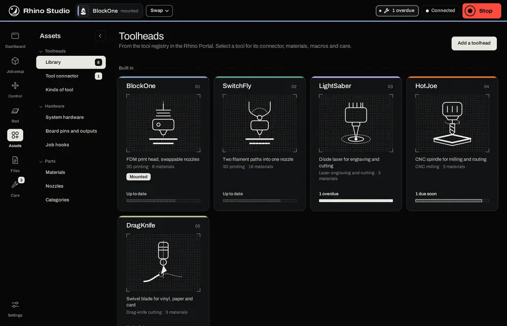
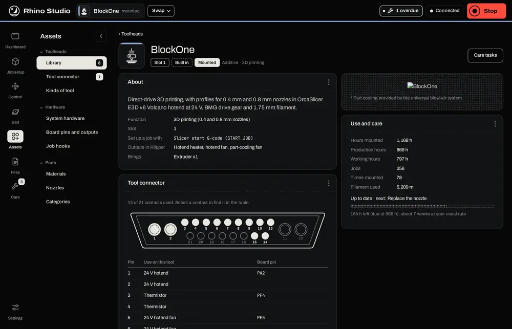
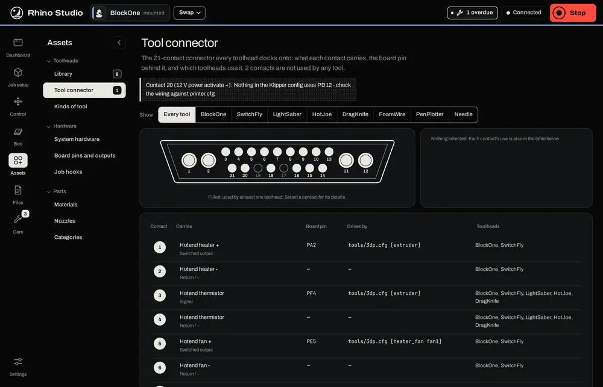
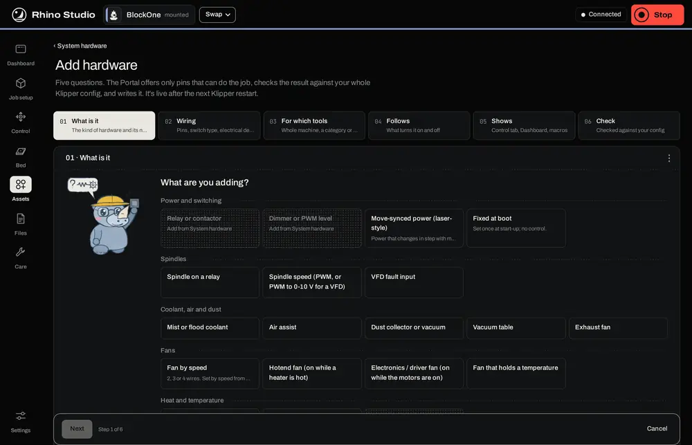
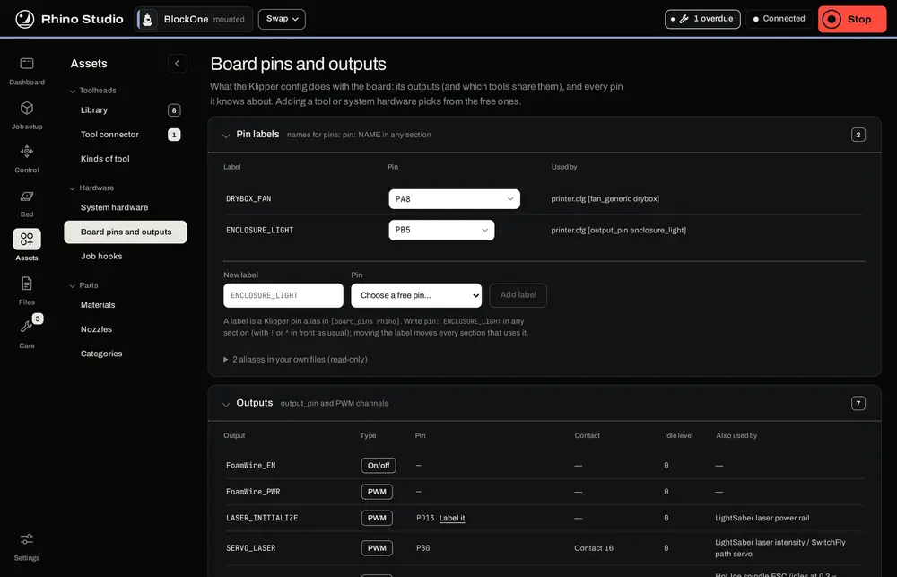

Assets holds what the Rhino is made of and works with, in three groups in the side menu. Toolheads: the Library, the Tool connector and Kinds of tool. Hardware: System hardware, Board pins and outputs, and Job hooks. Parts: Materials, Nozzles and Categories. These are the same records the Portal keeps (see The Tool Manager portal), and every change is checked by the Portal against your whole Klipper config before it is written.
The Library shows each toolhead as a card: its picture, slot, what it does, its materials, and whether it is mounted or has maintenance due. Add a toolhead starts the wizard for a tool you have built; its steps are the same as the Portal's (see Adding a tool).

Select a card for the tool's own page:
START_JOB has homed and heated, or before END_PRINT cools and parks. It is copied into the tool's job hooks; restart Klipper to make it live. If you edit the macro later, the page says so and offers Update.
Tool connector shows all 21 contacts of the umbilical and what each one does for every tool; pick a tool to see only its contacts. Kinds of tool lists the kinds the Add a toolhead wizard offers, under Additive, Subtractive and Passive, with the starting values each kind fills in for a new tool.

System hardware is anything wired to the board rather than the tool connector: enclosure fans and lights, an air or vacuum pump, a door switch. It is there whichever tool is mounted, and each item can have its own maintenance tasks. Items with live controls appear on Control › Hardware.
Press Add system hardware for the wizard. It asks six short steps, with the wizard's rhino beside each question:
What is it: the kind of hardware, from relays and dimmers to spindles, coolant, fans, heaters, sensors and switches.
Wiring: the pins, the switch type and electrical details. Only pins that can do the job are offered.
For which tools: the whole machine, a category of tools, or particular tools.
Follows: what turns it on and off, such as a heater, the motors or the job.
Shows: where it appears: Control, the Dashboard, macros.
Check: the result is checked against your whole Klipper config, and written. It goes live after the next Klipper restart; the banner offers to restart, or waits for a job to end.

To change an item later, open it and edit: its answers are filled in. To make it a different kind, remove it and add the new one.
pin: NAME in any section); moving the label moves every section that uses it.job_hooks.cfg, live after the next Klipper restart.